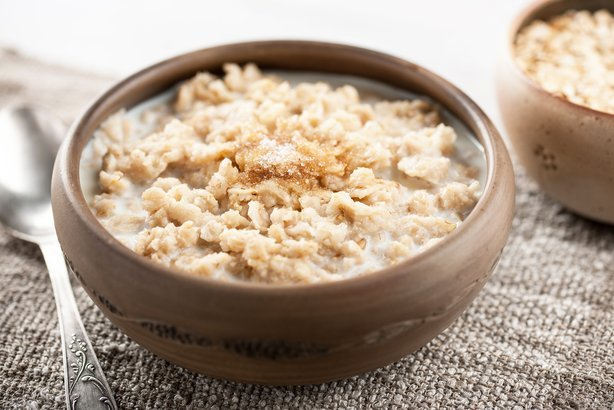

Oatmeal

Description
Simple ingredients, easy directions, and plenty of fiber and protein
make the beloved healthy breakfast staple more delicious than ever.
Best of all, it's totally customizable—add your favorite nutritious
mix-ins such as fresh fruit, sliced nuts, or a dollop of peanut butter.
Ingredients
- 1 cup old-fashioned rolled oats
- 1 cup milk
- 1 cup water
- 1/8 tsp salt
- 1/2 teaspoon ground cinnamon
- 1 teaspoon honey
- Desired toppings
Steps
-
Combine oats, milk, water, salt, and cinnamon in a medium saucepan.
Bring to a boil, then reduce heat to low.
-
Simmer uncovered for 3 to 5 minutes until thickened, stirring
occasionally. Remove from heat and let cool slightly.
-
Divide equally between two bowls. Drizzle each serving with 1/2
teaspoon honey. Add additional desired toppings and serve.